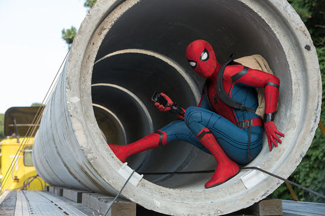
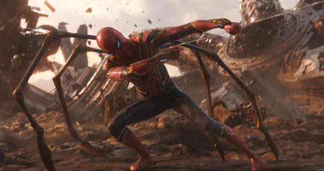

Along Came a Spider
A bite from a spider somehow granted teenager Peter Parker its arachnid abilities and instead of using them for personal gain, he decided to help others with them. An orphan living with his aunt, May Parker, the boy chose to wear a mask while fighting crime so as not to burden her with his actions. Calling himself Spider-Man and sporting a pair of web-shooting devices he’d constructed, Parker wound up in internet videos which attracted the attention of Tony Stark. The billionaire industrialist deduced Spider-Man’s secret identity and approached Parker at his and May’s home in Queens, New York with a request for aid from the hero in an upcoming confrontation with Captain America and a group of other rogue Avengers and associates. Parker was initially hesitant to even admit his secret career as Spider-Man, but the thrill of adventure and Stark’s talk of responsibility drew him in and he accepted the invitation, as well as a new, high-tech costume and web-shooters.
Does Whatever a Spider Can
Peter Parker’s gifts from the spider bite include enhanced strength, stamina, and agility, as well as the ability to cling to nearly any surface by his hands and feet, and an internal “alarm” of sorts that warns him of impending danger. When in costume he becomes a figure in motion, leaping and jumping about with a steady stream of wisecracks. The Spider-Man suit designed by Tony Stark includes wrist-worn web-shooters (adapted from Peter’s own invention) that emit lines of synthetic “webbing” capable of supporting great weight with a high-degree of holding power. In addition, the suit provides various optical powers, a voice-changer, a drone tracking device, and some protection against outside elements. When not in use, the suit appears as loose, thin cloth, but when donned, it adheres tightly to the body and stretches easily to almost any movement by the wearer. Recently, Parker acquires a specialized suit of armor from Stark that features many qualities of the inventor’s own Iron Man suits, including enhanced protective layering, optics, internal air supply, along with a set of four spider-like extra “arms” that answer to the teenager’s mental commands.
